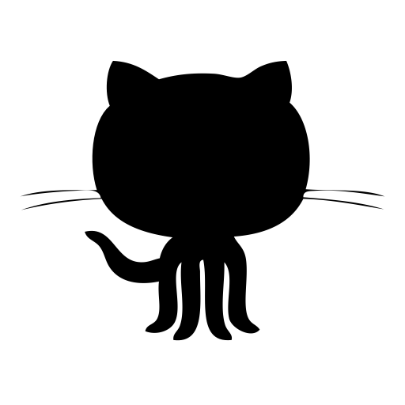

- Contact
-
- +9779804183965
-
 sthashristi777@gmail.com
sthashristi777@gmail.com
-  ShristiShrestha
An open-minded, organized and learning individual sincere to exhibit with notion of a team-player. Acquired appropriate communication skills and managing capabilities via extra activities throughout the academics. Recently in Deep Learning Project for academics in Speech Technology titled Speaker Identification using constrained based Convolutional Neural Network handled data preprocessing and parameters tuning tasks. Highly motivated since then to work professionally in data analysis and intelligence. Also worked as a backend developer website management based project where database design and api building were major tasks.
Pulchowk Campus, Institute of Engineering
Shree Amarsingh Model Higher Secondary School, Kaski
Using the concept of Object Oriented Programming in C++ and graphics rendering in Simple and Fast Multimedia Library, we developed a classic Nepali Game BaaghChaal.
Inspired from emergency call service 911, we developed a prototype call and rescue system. It consisted of android and web based application to make emergency SMS and dispatch help respectively where I handled website development and database management.
3D dice render in C++ using OpenGL and GLUT as a project in Computer Graphics
This travel website was developed in Python Django, Bootstrap CSS and JavaScript, Natural Language Processing using NLTK, Recommendation using collaborative filtering based on user similarity algorithm, Google Map API, and Web Scraping using Beautiful Soup where I handled Map API and recommendation implementations.
Web based database management using PHP, Bootstrap CSS and MYSQL to handle Master Thesis data for IOE
Contributed in data preprocessing and model optimization works
HoD, Department of Electronics and Computer Engineering, Pulchowk Campus, IOE
ICT Assistant Director, Pulchowk Campus, IOE
sthashristi777@gmail.com